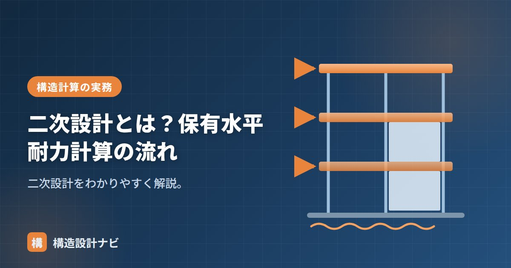

二次設計とは？保有水平耐力計算の流れ

二次設計とは、めったに起こらない大地震に対して、建物が倒壊・崩壊しない（人命を守る）ことを確かめる設計です。一次設計に加えて行うもので、日本の耐震設計を支える「二段階設計」の後半部分にあたります。
- 二次設計は大地震（震度6強〜7クラス）で倒壊させないことを確かめる設計。
- 建物の規模・高さに応じたルート（1・2・3）で確認方法が変わる。
- ルート3では保有水平耐力Quが必要保有水平耐力Qun以上であることを確認する。
一次設計との違い
一次設計は中地震で「損傷しない」、二次設計は大地震で「倒壊しない」ことが目標です。大地震では部材が一部降伏（塑性化）してもよく、建物の粘り（靱性）でエネルギーを吸収して倒壊を防ぐという考え方です。
対象建物の条件
二次設計の方法は、建物の規模や計算ルートで変わります。
- ルート1：小規模で、剛性・耐力に余裕があり二次設計を省略できる範囲。
- ルート2：層間変形角・剛性率・偏心率などで確認（高さ31m以下など）。
- ルート3：保有水平耐力計算で確認（高さ31m超など、より大規模）。
規模が大きくなるほど、地震時の揺れ方が複雑になり、剛性・耐力のバランスの偏りが被害に直結しやすくなります。そのため大規模な建物ほど、より詳細な検討（ルート3の保有水平耐力計算）が求められる仕組みになっています。
保有水平耐力計算の流れ
大地震時に建物が実際に持つ水平耐力（保有水平耐力 Qu）が、必要保有水平耐力 Qun 以上であることを確かめます。
Ds＝構造特性係数（粘りが大きいほど小さい）、Fes＝形状係数（剛性率・偏心率による割増し）、Qud＝大地震時の地震層せん断力（C₀＝1.0相当）。粘り強い（Dsが小さい）建物ほど、必要保有水平耐力が小さくなります。
計算の流れとしては、まず建物の各層で部材が降伏する順序を追いながらQu（保有水平耐力）を求め、次に構造特性係数Ds・形状係数Fesを設定してQun（必要保有水平耐力）を算出し、両者を比較します。Quが上回っていれば、その建物は大地震時にも倒壊しないと判断されます。
| 構造種別 | 靱性の目安 | Dsの目安 |
|---|---|---|
| 鉄骨造（S造） | 粘り強い（幅厚比が小さいなど）〜粘りに乏しい | おおむね0.25〜0.5の範囲（告示・技術基準解説書で規定） |
| 鉄筋コンクリート造（RC造） | 粘り強い（じん性型）〜粘りに乏しい（脆性型） | おおむね0.3〜0.55の範囲（告示・技術基準解説書で規定） |
Dsは部材の破壊形式（曲げ降伏か、せん断破壊のような脆性的な壊れ方か）によって細かくランク分けされており、粘り強い部材で構成された建物ほど小さい値が採用できます。
なぜ「粘り」で耐えるという考え方が成り立つのか
大地震のような極めて大きな力に対して、すべての部材が弾性の範囲内（変形しても元に戻る範囲）で耐えようとすると、非常に頑丈で高価な建物になってしまいます。そこで二次設計では、一部の部材が塑性化（降伏して大きく変形）してもよいと考え、その塑性変形によって地震のエネルギーを吸収させることで、より合理的に倒壊を防ぐという設計思想を採用しています。これが構造特性係数Dsの考え方の背景で、粘り強い（塑性変形能力の高い）架構ほどDsが小さくなり、必要な耐力を小さく抑えられます。
よくある質問
Q1. ルート1・2・3はどうやって決まりますか？
建物の高さ・規模・構造形式などに応じて適用ルートが決まります。小規模な建物はルート1で済むこともありますが、高さや規模が大きくなるほど、より詳細な検討を求めるルート2・3が適用されます。
Q2. 一次設計だけでは不十分なのですか？
一次設計は中地震で建物が損傷しないことを確認するもので、大地震時の安全性までは確認していません。人命を守るためには、大地震で倒壊しないことを別途確認する二次設計が必要です。
「一次設計」「許容応力度計算（ルート）」「層間変形角・剛性率・偏心率」をどうぞ。
保有水平耐力の検討でまず確認するのは、崩壊形が梁降伏先行の全体崩壊型になっているかです。柱が先に降伏する層崩壊型だと同じQuでもDsが大きく評価され必要保有水平耐力が跳ね上がるため、部材の耐力バランスを設計の早い段階で調整しておくと後戻りが少なくて済みます。
まとめ
- 二次設計は大地震（震度6強〜7）で倒壊させないことを確かめる設計。
- 規模・ルートで方法が変わり、ルート3では保有水平耐力計算を行う。
- Qu≧Qun＝Ds・Fes・Qud。粘り強い建物ほど必要保有水平耐力が小さい。
- 塑性変形でエネルギーを吸収し、合理的に倒壊を防ぐという設計思想。